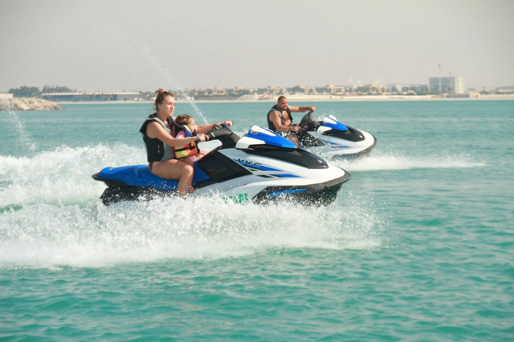
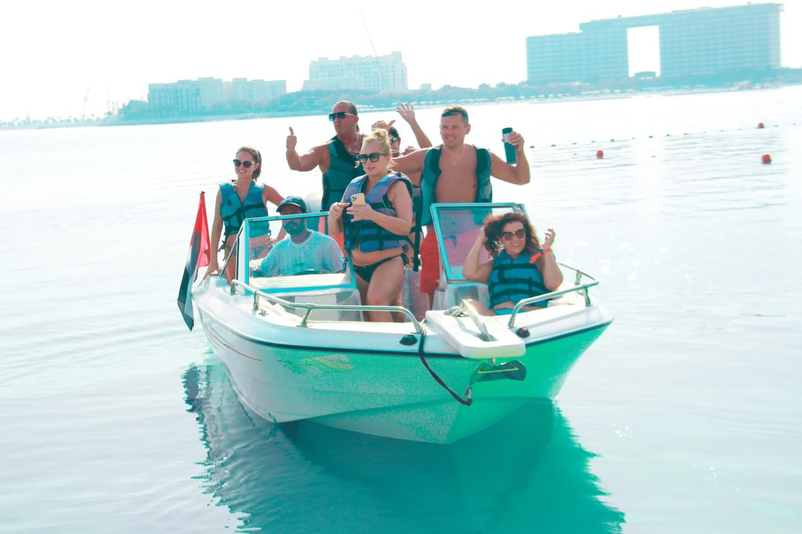
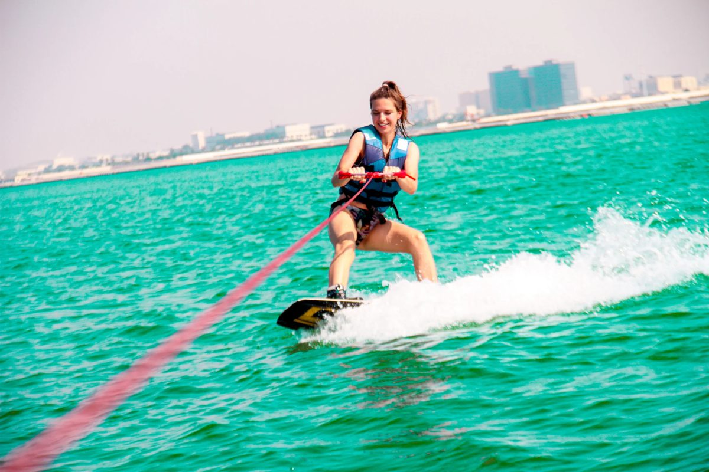

01 · The short version
The water, the team and the audience are there. The feed is quiet.
Blue Coast runs jet skis, banana rides, parasailing, kayaks, water-skiing, boat trips and sea fishing from the Radisson Resort on Al Marjan Island. You take bookings on your own checkout, by phone and WhatsApp, and through GetYourGuide and Tripadvisor. What is missing is video of the rides, so people planning a day in Ras Al Khaimah can see them before they book.
8,438
Instagram followers, from 123 posts
9
likes a post, median of your last 12 posts
2 July
date of your last Instagram post
2 of 12
recent posts that are reels
What is already strong, and worth building on
- A full range on the water, all listed on your site: jet ski, banana ride, parasailing, kayaking, water-skiing, boat trips and sea fishing.
- Four ways to book: your own checkout, phone and WhatsApp, GetYourGuide and Tripadvisor.
- A location people search for: the Radisson Resort on Al Marjan Island, Ras Al Khaimah.
- Real photos of your rides on your own website, with the Marjan Island shoreline behind them.
- An audience already there: 8,438 Instagram followers built up over 123 posts.
You do not need a new site to start. You need short video of the rides, the crew and your guests, posted on a plan, so people planning a day on the water see Blue Coast first.
02 · What has worked for places like yours
Real people, on location, doing something worth watching.
Videos we planned and filmed for businesses we work with. Each one gives people a reason to watch, and a reason to book.
87M+
views on content we have made for one North East business
70M
views on a single reel, planned and filmed in the venue
7.8x
blended return on ad spend for a product business whose ads we run
- A reason beats a nice shot. A ride on its own rarely gives people a reason to act. The same ride with a question, a challenge or a first-timer does.
- The water is the set. Marjan Island, the resort beach and your boats are where people will be, so that is where a licensed UAE crew would film.
- It is planned, not luck. We know which formats work before filming starts, and we pick the mix for your rides and your week.
View counts and return on ad spend from our own client dashboard, checked 10 October 2026.
03 · Your website
A full site, with old template pages and a footer still dated 2025.
Your site lists every ride, the checkout and your location, which is a good base. These are the changes we would make so the site works with the video.
| What we saw | Why it matters | Fix |
|---|
| Template pages are still live | The site still has a "Hello world!" blog post from February 2025, and location pages for San Antonio, Houston and San Diego that have nothing to do with Ras Al Khaimah. | Remove them, so the first pages a visitor finds are about your rides and your team. |
| The footer still says 2025 | The copyright line at the bottom of every page is out of date, which makes the rest of the site look unmaintained. | Update it, and keep a dated news or season page so the site looks current. |
| No video on the site | The pages we crawled have no embedded video. The images are stills, so visitors have to picture the ride from a photo. | Add one short ride film to each main ride page, with the booking button beside it. |
| Bookings are split across four routes | Your own checkout, phone and WhatsApp, GetYourGuide and Tripadvisor all take bookings. Each third-party listing sends a share of the booking to the platform. | Make your own checkout and WhatsApp the main route, and put the videos on the pages that lead to them. |



Photos from your own website. These are the scenes a licensed UAE crew would film to our shot list, with your team and guests in them.
04 · Your social channels
Your feed has been quiet since July.
9
likes a post, median of the last 12
2 of 12
recent posts that are reels
2 July
last post, 100 days ago
Blue Coast has 8,438 followers. The pattern in your recent posts:
- Only two of your last twelve posts are reels. The rest are photos, and your last twelve posts sit at a median of 9 likes. On an account this size, that mix is one reason reach stays low.
- The posting has stopped. Your last post was on 2 July 2026, and nothing has gone out since. Followers who want to see the rides have nothing new to watch.
- The audience is already there. 8,438 followers and a bio that points to your site. The gap is between that audience and fresh video, not the audience itself.
What this means. Short video of the rides, the crew and your guests, posted every week, gives your followers something new to watch and gives new visitors a reason to book this week.
Source: instagram.com/bluecoastwatersports public profile and posts, checked 10 October 2026.
05 · Three Ras Al Khaimah water sports accounts
Who else is selling water sports in Ras Al Khaimah, and how they show it.
We checked three independent Ras Al Khaimah water sports operators on Instagram. The Meta Ad Library keyword search for watersports in the emirate found one of them advertising. Checked 10 October 2026.
| Business | Instagram | Meta ads | What they lead with | Latest post |
|---|
Blue Coast Water Sports
Al Marjan Island | 8,438 followers, median 9 likes | Page found, 0 ads | Jet ski, banana ride, parasailing | 2 July 2026 |
Rs Blu Rak
@rsbluewatersports, Ras Al Khaimah | 59 followers, 65 posts, median 1 like | Page found, 0 results | Parasailing, with bookings by phone in captions | 23 February 2026 |
Al Ras Kayak
@alraskayak, Ras al Khaimah | 1,574 followers, 787 posts, median 19 likes | Page found, 0 results | Kayaking in the UAE and Ras al Khaimah | 1 August 2026 |
Jet Zone Water Bikes
@jetzone.rak, Mina Al Arab, Ras Al Khaimah | 1,297 followers, 315 posts, median 5 likes | One video ad, started 9 October 2026 | Jet ski, kayak, banana and donut rides | 9 October 2026 |
What the numbers say
- Blue Coast has a larger Instagram audience than any of the three operators we checked. 8,438 followers, against 1,574, 1,297 and 59.
- Al Ras Kayak posts often, 787 times, and still gets a median of 19 likes a post.
- Jet Zone started a 12-second video ad on 9 October 2026. Our keyword search found one advertiser.
Sources: public Instagram profiles, and the Meta Ad Library (UAE) keyword search for watersports in Ras Al Khaimah, checked 10 October 2026.
06 · What is working in your market
What is working in the Ras Al Khaimah market.
The accounts getting attention here post video, and post it steadily. Jet Zone, a smaller operator, started a 12-second video ad on 9 October 2026. Al Ras Kayak posts often and still pulls a median of 19 likes. Both point the same way: steady video, not a dormant feed, is what earns reach in this market.
1
The rides are the star
Jet skis, banana rides and parasailing over Marjan Island. Filmed from the water, with the skyline behind.
2
Your crew on screen
The instructors and the team, with their own favourite part of the ride. People book with the person they have seen.
3
A reason to book this week
A sunset slot, a new ride or an offer. Every video ends with a clear way to book.
07 · Twelve videos we would make
Built from your rides, your crew and your guests.
Every concept uses something Blue Coast already has. Six are built to bring in bookings. Six keep your feed active between shoots.
Videos that bring in bookings
6 conceptsGuestFirst time on a jet ski
"I have never been on one. Watch what happens."
A first-time rider, filmed from the water, from the moment they step on to the moment they stop.
Why: a first-timer is the viewer who is deciding whether to book.
What to expectThe first ten minutes
"What happens before you touch the throttle."
The life jacket, the safety brief and the first lap with the crew, shot in the order you will live it.
Why: it answers the questions people ask before they book.
ChallengeWho falls off first
"Three riders, one banana ride. Who falls off first?"
Three guests on the banana boat, filmed from the jet ski behind them.
Why: a challenge is something people tag friends into.
GuestParasailing, first time up
"Here is what our guests say about the view from up there."
Short answers from guests after they land, with the view behind them.
Why: it shows the experience in guests' own words.
VisitorYour first afternoon
"Visiting Ras Al Khaimah? Here is an afternoon on the water."
A visitor's plan for an afternoon on Marjan Island, from the resort to the water.
Why: it gives people looking for a day out a plan to follow.
OfferThe last ride before sunset
"The last ride of the day, from the Radisson beach."
The final ride of the day, filmed in the golden hour and ending on the booking details.
Why: a clear time and place gives a reason to book this week.
Organic that builds the audience
6 conceptsSeriesKit check
"Life jacket on. Safety brief done. Off we go."
A weekly kit check with the crew, one piece of kit or one rule at a time.
Why: a series people come back for.
CrewWho takes you out today
"Meet the crew who will be on the water with you."
Each instructor in the water, with the part of the ride they most enjoy teaching.
Why: people book with the person they have already seen.
ProgressThree tries, then it clicks
"Three tries, then it finally clicks."
A beginner water-ski session, cut from the first fall to the first clean lap.
Why: progress keeps people watching to the end.
SunriseBefore the first boat
"Sunrise on Marjan Island, before anyone else is out."
A kayak at first light, with the skyline and no voice-over.
Why: an image people save and send to friends.
CreatorsA local creator takes the ride
"We asked a local creator to try the whole day."
One invited creator on the full day out, filmed from the boat and from the water.
Why: it puts a trusted voice in front of new followers.
QuestionsYour questions, answered on the water
"You asked: is it safe for beginners?"
Real questions from your messages, answered by the instructor on the water.
Why: it answers the questions people send before they book.
09 · Who we are, and next steps
A Newcastle team that plans the videos, edits them and runs the ads.
We plan every video around what brings people in. A licensed UAE crew would film to our shot list on the water, and we direct remotely from Newcastle, then edit, caption and report from our studio. We measure what matters to you: bookings, enquiries and direct bookings, not likes.
87M+
views on content we have made for one North East business
70M
views on a single reel, planned and filmed in the venue
7.8x
blended return on ad spend for a product business whose ads we run

Jay Williams and Anya Davey, the founders of Fusion Creative. I plan the videos and run the ads from Newcastle, and a licensed UAE crew would film to our shot list. I would be the person you call about the plan. Our team of editors turns every shoot day into finished videos, and a licensed UAE crew would film each one to our shot list.
Next steps
- A 20 minute call to pick the first videos.
- Then one shoot day on the water at Marjan Island.
- We edit and hand over the finished videos for you to post.
Your feed has been quiet since July.
Blue Coast has 8,438 followers. The pattern in your recent posts:
What this means. Short video of the rides, the crew and your guests, posted every week, gives your followers something new to watch and gives new visitors a reason to book this week.
Source: instagram.com/bluecoastwatersports public profile and posts, checked 10 October 2026.